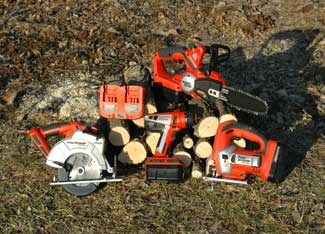

If you need a new power tool, take a look at battery-operated power tools. They’ve improved over the years and are a great, green choice.
With lithium-ion batteries, rechargeable tools are lighter and stronger than ever. Lithium-ion batteries hold a charge better and last longer than nickel-cadmium batteries, and there are lots of other advantages to these versatile tools.
Rechargeable tools are portable. You can use them in remote areas without being concerned about distance from a power outlet or generator. Because the tools aren’t plugged in while you use them, they’re safer - no cords to trip over, get tangled in or cut into. They’re much quieter than tools powered by gas engines, and you don’t have to breathe those nasty fumes while you work.
If you’re not charging the batteries with power from a gasoline- or diesel-powered generator, rechargeable tools can be a good choice for the environment. You can use one or two batteries for multiple tools, and charge them with electricity generated by a photo-voltaic panel or a wind turbine.
In fact, multiple woodworking, yard and garden tools can run on the same battery. The Black & Decker FSXtreme 18-volt Ni-Cad battery powers 26 different tools including a circular saw, reciprocating saw, flashlight, jigsaw, brad nailer, impact driver, sander, drill and hand vac. And new tools are being developed to run on the same battery.
Rechargeable tools can be as powerful and fast as corded tools, but generally a bit heavier. For example, the DeWalt DW368K is a plug-in 7 1/4-inch circular saw that weighs 9 1/2-pounds. The blade spins up to 5,800 rotations per minute (rpm). The rechargeable DC300K (also with a 7 1/4-inch blade that turns up to 4,000 rpm) weighs 9.9 pounds.
Not all chargers are equally efficient, so the Energy Star site provides information to help you choose the most energy-efficient models.
For more information on rechargeable power tools, read Cordless Drills and Drivers and Rechargeable Power Tools.|
 TROY GRIEPENTROG One rechargeable battery can power a variety of power tools. For convenience, consider two batteries: Use one while the other is charging. |
|
|